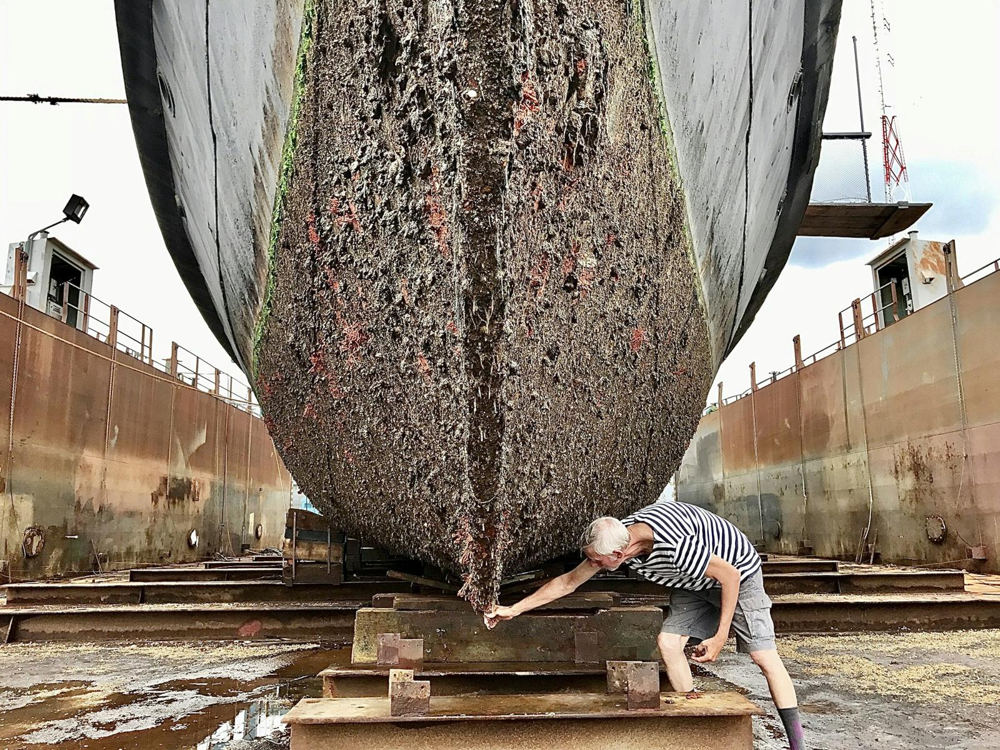
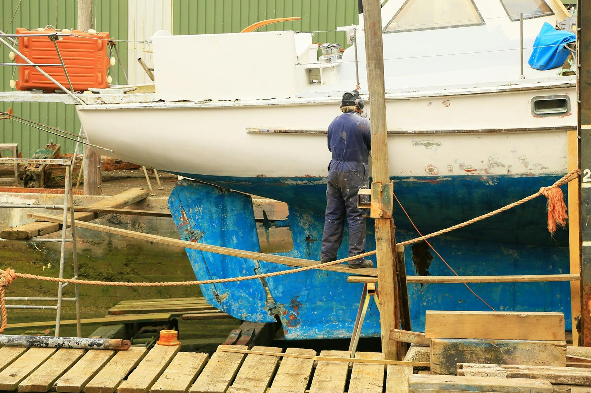
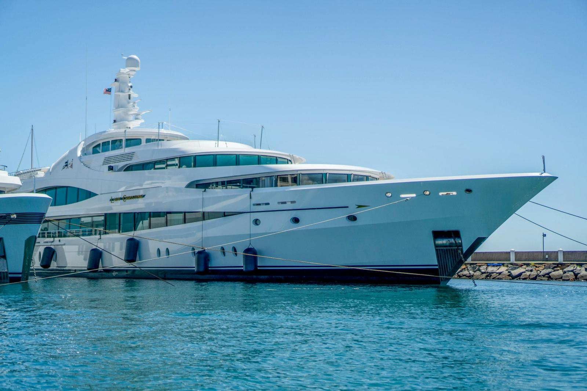

Indoor winter storage
A safe winter in a climate-controlled indoor garage, away from sun, rain and salt. Every boat has its own bay and its own service card; ask for a photo any time and we send it on WhatsApp.
- Indoor, humidity-controlled space
- 24/7 cameras and security
- Winter storage insurance
- Battery charging and ventilation checks
- TR

Maintenance & repair
Engine winterisation, electrics and electronics, fibreglass and gelcoat repair; to authorised-service standards with genuine parts.
- Winterisation and spring commissioning
- Gearbox, shaft, propeller
- Fibreglass, gelcoat and paint repair
- Electrics, batteries, charging systems

Hull & antifouling
Hull scraping, antifouling application and anode replacement. You launch with a clean, low-drag bottom ready for the season.
- Pressure washing and scraping
- Antifouling application
- Anode and bilge checks

Crane & transport
From your marina to the garage and back to the sea. We lift with a travel lift, move by road and launch at the start of the season.
- Travel lift haul-out
- Road transport (lowbed)
- Launch and delivery to your berth

Cleaning & polishing
Pressure washing, gelcoat polishing, teak care and interior detailing by our Boat Clean team. At the end of storage your boat leaves looking like new.
- Exterior wash and protective wax
- Gelcoat polish, ceramic protection
- Teak and interior detailing